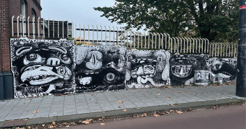
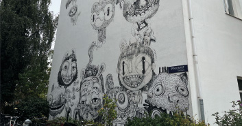
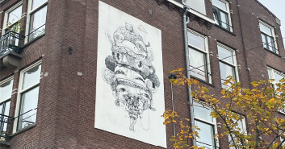
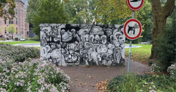
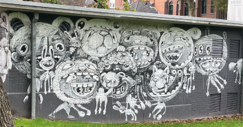
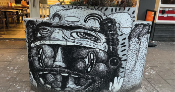
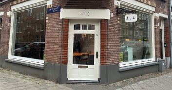
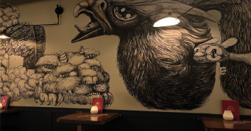

Locaties

s-Gravesandestraat, Amsterdam

Spinozahof, Amsterdam

Krugerplein, Amsterdam

Oosterpark, Amsterdam

Oosterpark, Amsterdam

Eerste Oosterparkstraat, Amsterdam

(Kantoor) Pretoriusstraat 71, Amsterdam

(Bar Jones) Nes 33, Amsterdam